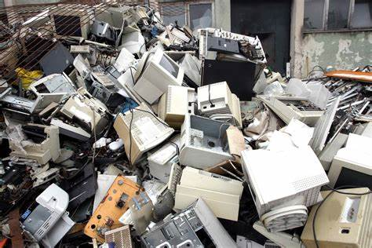

<!DOCTYPE html>
<html lang="en">
<head>
    <meta charset="UTF-8">
    <meta http-equiv="X-UA-Compatible" content="IE=edge">
    <meta name="viewport" content="width=device-width, initial-scale=1.0">
    <title>Document</title> <link rel="stylesheet" href="./style1.css">
</head>
<body> 
    <div class=".container">
        <header>
    <footer>      

        <nav>
            <a class="nav-link" href="./biografia.html">LOCALIZAÇÃO</a> &nbsp; &nbsp; &nbsp; &nbsp; &nbsp;
            &nbsp; &nbsp; &nbsp; &nbsp; &nbsp; &nbsp; &nbsp; &nbsp; &nbsp; &nbsp; &nbsp; &nbsp; &nbsp; &nbsp;
            <a class="nav-link" href="./login.html">LOGIN</a>
        </nav>
            
        </header>
        <main>
            <article></footer>
                
         <footer>     
                <br>
                
                <h1> Sobre o residos de lixo eletrônico</h1>
                <p>Segundo o documento, o lixo eletrônico global chegará a 74 milhões de toneladas em 2030, quase o dobro dos índices atuais. Não é difícil imaginar como isso acontecerá: smartphones, computadores, tablets, assistentes virtuais, 
                    entre outros dispositivos eletrônicos, estão cada vez mais presentes na rotina de uma família. Muitas vezes, estes produtos têm prazos curtos de uso, seja pelo conceito de obsolescência programada 
                    ou seja pelo próprio avanço da tecnologia, que faz com que objetos de pouco tempo de vida logo se tornem antiquados. Quando isso acontece, é necessário dar a correta destinação ao resíduo elet.
                </p>
                
                <p>Com o elevado uso de equipamentos eletrônicos no mundo moderno, o lixo eletrônico tem se tornado um grande problema ambiental quando não é descartado da forma correta.

                Equipamentos e componentes como computadores, monitores, celulares, pilhas e baterias, televisores, lâmpadas fluorescentes, entre outros, compõem o chamado lixo eletrônico. No processo de produção desses
                equipamentos e acessórios, são usadas substâncias que podem garantir maior durabilidade e desempenho. Porém, quando a vida útil desses produtos chega ao fim, esses mesmos elementos podem representar sérios riscos à saúde das pessoas e ao meio ambiente se não forem descartados adequadamente. Mercúrio, chumbo, fósforo e cádmio são apenas alguns dos resíduos tóxicos encontrados nesses produtos.
                
                Os restos de equipamentos eletrônicos contêm mais de 20 tipos de componentes que podem ser extremamente prejudiciais à saúde e ao meio ambiente e podem resultar na contaminação do espaço e das pessoas que fazem a sua manipulação, como as pessoas que separam materiais para reciclagem.
                Sem saber exatamente como descartar equipamentos e acessórios eletrônicos, muitos consumidores tendem a deixar esses itens armazenados em casa até o dia em
                 que fazem o descarte no lixo comum ou doam para alguém que possa gerar algum lucro com os componentes que possam ser revendidos ou reutilizados. O descarte desses produtos juntamente com o lixo comum 
                 pode gerar o vazamento das substâncias que mencionamos e contaminar o solo e os lençóis freáticos, os quais são responsáveis por boa parte da água que consumimos. 
                 
                
                QUAL É A SOLUÇÃO?</p>
                <p>
                    
                    <br>
                </p>
            
                <p>De acordo com a diretora-executiva da Alurb, Kedyna Tavares, o lixo eletrônico contém substâncias químicas que podem ser prejudiciais ao meio ambiente e à saúde humana se descartadas de forma inadequada. Por isso, é fundamental que as pessoas se informem sobre as opções disponíveis para o descarte correto desses resíduos.

                    Uma das opções é levar o lixo eletrônico até a loja onde o produto foi adquirido ou recorrer a empresas especializadas nesse serviço. Além disso, a Prefeitura de Maceió realiza o recolhimento desses materiais por meio das cooperativas de reciclagem, que dão o destino correto para esses resíduos.
                    
                    Na cidade de Maceió, mais de 50 mil residências são atendidas pelo programa de Coleta Seletiva porta a porta. Nesse sistema, os cidadãos têm a possibilidade de descartar corretamente seu lixo eletrônico entregando-o aos cooperados. Vale ressaltar que esses resíduos devem estar separados dos materiais recicláveis comuns.
            </article>
        </main>
        <footer>
            <p> Todos os direitorios </p>
        </footer>
    </div>